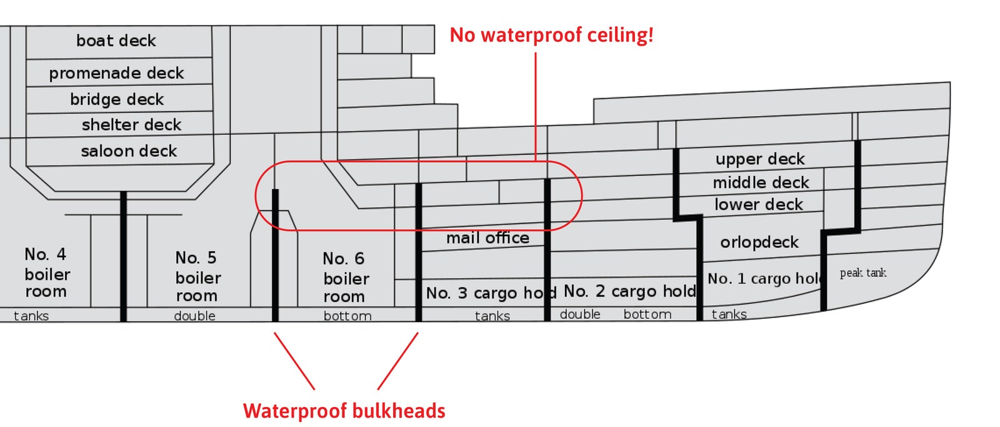

LET’S SAY YOU traveled to London, England, in 1912, and bought a ticket on the RMS Titanic for its maiden voyage. But you’re a frugal time traveler, so you elect to travel third class (only £8!).
would place you on F deck, six levels below the lifeboats, and mere tens of feet from the starboard hull, which a 1.5 million ton iceberg punctures open at 11:40 pm on April 14, 1912.
Eighty-four years later, a scientific expedition to the bottom of the Northern Atlantic ocean recovered a chronometer from the bridge of Titanic. It stopped the moment it hit the water, at 2:11 am.
In other words, you will have 151 minutes to escape.
That seems like it would be enough time, but out of Titanic’s 702 steerage passengers, only 178 survived. That’s for a few reasons. The first is simple logistics. Titanic had lifeboats for only half of its passengers, and in steerage you're not only bunked the farthest from them, but the escape route is a labyrinth of unmarked and heretofore off-limits tunnels and ladders.
And even if you do somehow find the way, crew members haphazardly block steerage passengers from ascending to the upper-class decks. Even with the best preparation, your odds of acquiring a seat are low. And if you fail, a long arctic swim awaits. But do not be alarmed.
The maze, discrimination, chaos, and cold can be overcome if you make a few bold and counterintuitive choices.
THE FIRST DAYS of your voyage will go by unremarkably. To pass the time, you should venture to the back poop deck for games and fresh air, enjoy a card game in the third-class saloon or, if you happen to see a crew member, perhaps suggest the boat slow down. Because as it is, Titanic is navigating icebergs off the coast of Newfoundland at far too great a speed. And on the night of April 14, 1912, just as you’re settling into your bunk in the forward section of F deck, Titanic sideswipes one at 22 knots.
You’ll be one of the closest passengers to the impact, but even so the jolt will feel relatively benign. Perhaps even anticlimactic. One fireman bunked even closer to the collision than you claimed to have slept through the incident entirely. “Dead to the wide [world],” he later told investigators. Other, lighter sleepers describe the sound as a “big vibration,” “a large cable being run out,” “a grinding crash,” “crunching and jarring,” or like “a basket of coals dumped on an iron plate.”
